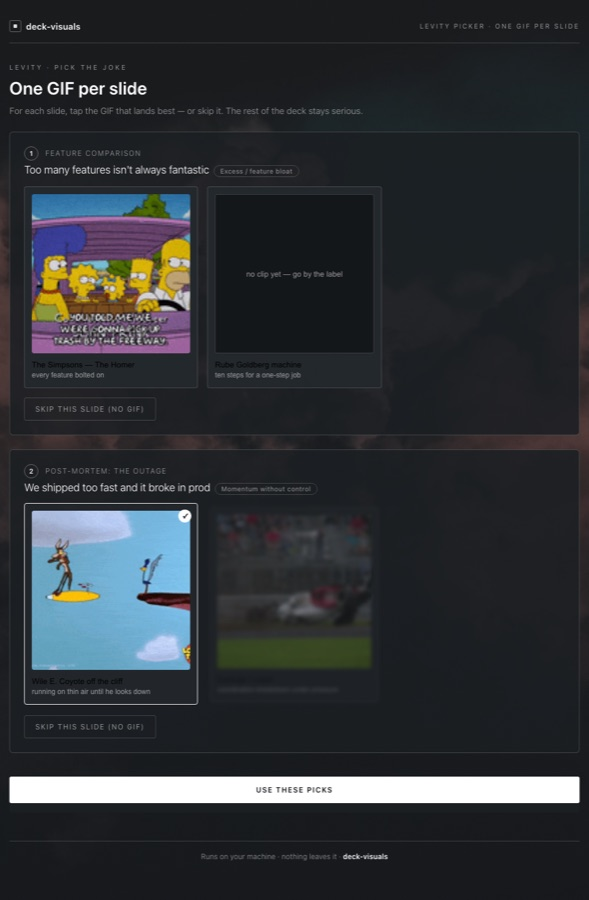

Real output, not mockups
The gallery
5 diagram recipes · 16 presentation icons · 8 validated palette slots · 16 accent themes · 25 concept-shape analogies · a 50-show recognition catalog. Every specimen below is real output the plugin actually produces, mounted in its own frame — the deck's own theme inside deck-visuals' own chrome. Each theme's surface is hue-coordinated to its accent, not a fixed navy — the specimens below deliberately span seven different themes to show the range.
Concept diagrams
4 of 5 recipes, drawing the same triage-automation system
Flow
Request → Validate → Commit. Linear process, A → B → C. House theme.
Relationship
One system, five things touching it — hub and spokes. The Matrix theme.
Architecture
Client / Service / Data bands, edges only between neighbors. Wes Anderson theme — a warm surface, not navy.
Timeline
Chamfered milestones, amber marks "you are here." Same real quarterly numbers as the hero chart. Mario Kart theme.
Before / after
The same real numbers — a plain bullet slide, then charted and reframed as a claim. Breaking Bad theme — the bars take the accent, not a fixed blue.
Dataviz charts
Every chart ships a reachable table twin — this one's toggle is live
Deploys per quarter
Mario Kart theme — the bars take the accent, not a fixed blue. Click "Show as table" inside the frame.
Icon anchors
16 Lucide-style glyphs, theme-agnostic — no frame needed
Levity
Claim → concept shape → one named scene. 25 shapes in the seed library, never a guessed URL.
"The Homer"
Shape: excess / feature bloat. Claim: too many features isn't always fantastic. The Simpsons' unsellable, everything-bolted-on car. The Simpsons theme.
Wile E. Coyote
Shape: momentum without control. Claim: we shipped too fast and it broke in prod. The doc's other candidate for this shape is a Formula 1 crash — see the picker. Severance theme.

Local tool — binds 127.0.0.1, no auth, no outbound calls. Nothing leaves the machine. Slot 1 shown above is "The Homer"; slot 2 is this Coyote-vs-F1-crash pick.
Palette & personalization
One validated data palette. The accent and its coordinated surface change together.
The 8-slot data palette below never changes — only the accent and its coordinated surface do, hue-matched so a warm theme never lands on a cold navy floor. Recognized shows unlock the ones that match what you love.
| Slot | Color | Name |
|---|
| 1 | #2894eb | Signal Blue (anchor) |
| 2 | #d95926 | Orange |
| 3 | #199e70 | Aqua |
| 4 | #c98500 | Yellow |
| 5 | #d55181 | Magenta |
| 6 | #008300 | Green |
| 7 | #9085e9 | Violet |
| 8 | #e66767 | Red |

Local tool — binds 127.0.0.1, no auth, no outbound calls. Nothing leaves the machine.

Local tool — binds 127.0.0.1, no auth, no outbound calls. Nothing leaves the machine.